|
|
|


计算
受压的短型和长型线性驱动机构在计算过程中需分别处理。
受压的短型驱动螺杆
受压的短型驱动螺杆不存在屈曲风险，因此无需对此进行校核。
所需的螺纹横截面因此可通过以下公式确定：
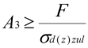
σd(z)zul: 静载荷下: Rp/1.5; 脉动载荷下 σzdSch/2.0; 交变载荷下: σzdW/2.0;
受压的长型驱动螺杆
计算螺纹所需小径的公式来源于欧拉方程：
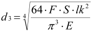
S: 安全系数（S≈6 至 8）
lk: 数学屈曲长度，lk≈0.7*l（一般导向主轴使用欧拉屈曲情况3）
强度计算：
应力情况1:
这个配置的上部受扭，下部受压缩，因此发生屈曲。
扭应力：
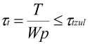
Wp: 抗扭截面系数»0.2*d3³
τtzul: 允许的扭应力；静载荷 τtF/1.5；脉动载荷 τtsch/2.0；交变载荷 τtW/2.0；
压缩（拉伸）应力：
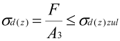
A3：螺纹小径截面
σd(z)zul: 允许的压缩（拉伸）应力
应力情况2:
这个配置的上部受到扭转作用，下部受到压缩，偶尔受到拉伸和扭矩作用。
零件检查公式：
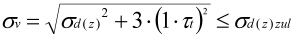
若不受摩擦力矩作用，所需扭矩则对应于螺纹扭矩。
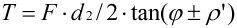
d2: 螺纹中径
φ：螺纹导程角（单螺纹梯形丝杠 φ≈3°...5.5°）
ϱ': 螺纹摩擦角
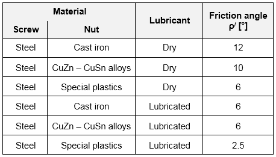
图60.4：摩擦角值
公式中的+表示“拧紧主轴”，-表示“松开主轴”。KISSsoft 会计算这两种情况，并在报告中输出结果。
屈曲计算（仅适用于长主轴）：
首先，计算长细比。
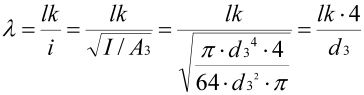
λ: 主轴的长细比
lk: 数学屈曲长度
i: 回转半径
只有三种不同的材料可以用于主轴，以便正确定义长细比。
若 λ≥λ0 = 105（S235），或 λ≥89（E295 和 E335），则存在弹性屈曲。
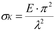
非弹性区域如 Tetmajer 所定义，且对于 S235，λ < 105。
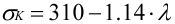
对于 E295 和 E335（λ < 89）：
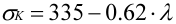
约翰逊抛物线方程也可用于非弹性情况的计算。（也适用于其他材料）
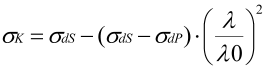
安全系数可以按以下方式计算：
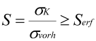
弹性屈曲的所需安全系数为 Serf≈3 至 6；非弹性屈曲为 Serf≈4 至 2。
长细比 < 20 时，无需再进行屈曲计算。
螺母的计算：
螺母的表面压力根据螺母长度计算得出：
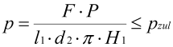
P: 螺距
l1：螺母螺纹长度
d2: 螺纹中径
H1: 螺纹的牙侧啮合高度
pzul: 许用面压
由于表面压力分布不均匀，螺母长度不应大于 2.5*d。在尺寸计算时，即使输入更长的长度，该长度仍被限制为 2.5*d。
效率与自锁：
转换旋转运动为纵向运动的效率：
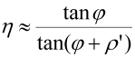
运动转换仅可能在非自锁螺纹中发生，因为此时极限值为φ=ϱ'，效率为0.5。
如果 φ>ϱ '，则螺纹不再自锁。
每个允许的值均来自Roloff Matek表。
Calculation
Short and long linear drive trains subjected to pressure are handled separately in the calculation process.
Short pressure stressed drive screws
Short pressure stressed drive screws are not at risk of buckling and therefore are not tested for this.
The required cross section of the thread can therefore be defined using the formula:
σd(z)zul: under static load: Rp/1.5; under pulsating load σzdSch/2.0; under alternating load: σzdW/2.0;
Long pressure stressed drive screws
The formula for calculating the necessary core diameter of the thread is taken from the Euler equation:
S: Safety (S≈6 to 8)
lk: mathematical buckling length, lk≈0.7*l (Euler buckling case 3 is used for general guided spindles)
Calculation of the strength:
Stress case 1:
The upper part of this configuration is subject to torsion and the lower part is subject to compression and therefore buckling.
Torsional stress:
Wp: polar moment of resistance Wp»0.2*d3^3
τtzul: permissible torsional stress; Static load τtF/1.5; Pulsating load τtsch/2.0; Alternating load τtW/2.0;
Compressive (tensile) stress:
A3: Minor diameter cross section thread
σd(z)zul: permissible compressive (tensile) stress
Stress case 2:
The upper part of this configuration is subject to torsion and the lower part is subject to compression, infrequent tension and torque.
Formula for the part to be checked:
The required torque corresponds to the thread torque, if not subject to any moments of friction.
d2: Flank diameter of the thread
φ: Lead angle of the thread (for single thread trapezoidal screws φ≈3°...5.5°)
ϱ': Thread friction angle
Figure 60.4: Values for the friction angle
The + in the formula stands for "tightening the spindle", and - stands for "loosening the spindle". The KISSsoft calculation calculates both situations and outputs the results in a report.
Calculation for buckling (only for long spindles):
First of all, calculate the slenderness ratio.
λ: Slenderness ratio of the spindle
lk: mathematical buckling length
i: Gyration radius
Only 3 different materials can be used for the spindle so that the slenderness ratio can be defined correctly.
Elastic buckling is present if λ>=λ0 = 105 for S235, or λ>=89 for E295 and E335.
The non-elastic area as defined by Tetmajer and λ <105 for S235.
For λ<89 and for E295 and E335:
The Johnson parabola equation can also be used for the calculation for a non-elastic case. (also for other materials)
The safety can then be calculated as follows:
The required safety for elastic buckling is Serf≈3 to 6. For non-elastic buckling, it is Serf≈4 to 2.
Buckling no longer needs to be calculated for a slenderness ratio < 20.
Calculation of the nut:
The surface pressure of the nut is calculated from the nut length:
P: Pitch of thread
l1: Length of the nut thread
d2: Flank diameter of the thread
H1: Flank engagement of the thread
pzul: permissible surface pressure
Due to the uneven distribution of surface pressure, the nut length should be no greater than 2.5*d. During sizing, the length is limited to 2.5*d even if a longer one is input.
Efficiency and self-locking:
The efficiency of the conversion from rotational movement into longitudinal movement:
The conversion of movement is only possible for non-self-locking threads, because the limiting value in this case is that, φ=ϱ', the efficiency is 0.5.
If φ>ϱ ' the thread is no longer self-locking.
Each permissible value is taken from the Roloff Matek tables.